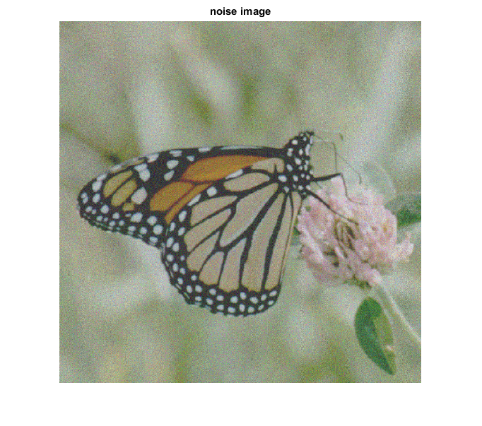
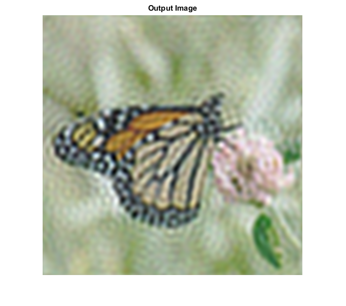

POWER_SPECT_EQ_FILTER_CVIP
power_spect_eq_filter_cvip() - power spectrum equalization frequency domain restoration filter.
Contents
SYNTAX
Y = power_spect_eq_filter_cvip(d,h,cutoff,limitGain,noiseImage,originalImage)
Input parameters include :
- d - The degraded image. A single or multiband image.
- h - The degradation function. It can be single band.
- cutoff - Cutoff frequency for filtering.
- limitGain - Sets the maximum gain using the DC value as a baseline. limitGain=1 --> DC value is the maximum gain. limitGain=1 --> DC_value*limitGain is the maximum gain.
- noiseImage - The noise image. It can be single band.
- originalImage - The original image. A single or multiband image. The number of bands should match with the input 'd'.
Output parameter include :
- Y - The output image after restoration filtering.
DESCRIPTION
This function performs the power spectrum equalization filtering operation on a degarded image to restore it to its original state. This filter is a variation of the Geometric mean filter with difference in the Alpha and Gamma values in the restoration equation. The values of Alpha and Gamma for Power spectrum equalization filter are 1/2 and 1 respectively. The filter is applied by multiplying it to the Fourier tansform of the degraded image and the restored image is obtained by taking the inverse Fourier transform of the resultant image from the filtering operation.
REFERENCE
1. Scott E Umbaugh. DIGITAL IMAGE PROCESSING AND ANALYSIS: Applications with MATLAB and CVIPtools, 3rd Edition.
EXAMPLE
% Read image origImage = imread('butterfly.tif'); % degraded image degradIm = imread('Butterfly.gaussian.tif'); % noise image noiseIm = imread('Butterfly.gaussian.tif'); % Cutoff frequency cutoff =32; % limit gain limitGain = 10; % degradation function h = [ 2.50 4.500 2.250 :4.500 9.001 4.500 : 2.250 4.500 2.250]; % Calling function y= power_spect_eq_filter_cvip(degradIm,h,cutoff,limitGain,noiseIm,origImage); % Display input image figure;imshow(origImage);title('Input Image'); figure;imshow(degradIm);title('degraded image'); figure;imshow(noiseIm);title('noise image'); % Output image figure;imshow(remap_cvip(y));title('Output Image');
ans =
0.0066
ans =
0.0062
ans =
0.0105
  CREDITS
Author: Mehrdad Alvandipour, october 2016
Copyright © 2017-2018 Scott
E Umbaugh
For updates visit CVIP Toolbox Website